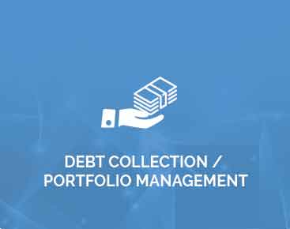

<div class="container">
    <div class="row">
        <div class="col">

<h3>Debt Collection Service</h3>
<p>Astute partners with companies across India to return consumers' cash to their clients. With skyrocketing customer acquisition costs, market expectations and debt pressures on an all-time high and rising customer retention demand, Astute takes this pressure off your mind by handling the core expertise. Our clients are confident of our capabilities with extensive experience in the debt collection service.</p>
<p>Negligent creditors severely affect the competitiveness of any company resulting in the collector's party facing huge debt write-off and enormous debt collection costs. We automate and streamline the entire debt collection proposal and process in order to maximize your profitability and minimize the risk associated with debt collection. The comprehensive debt collection and recovery strategies allow debtors to be easily detected, a recovery plan shared with them and strategics.</p>
<p>Being one of India's largest portfolio managers and debt collectors, the Astute Group helps companies effectively manage their debt portfolios. Locate, classify and prioritize debt collections in our strategies.</p>
<p>As the top debt collection service providing company, Astute provides the following services:</p>
<div class="container">
        <div class="row">

            <div class="col-6">
            <div>
                <h4>Contact Center Solutions and Field Collections under one roof</h4>
                <p>You no longer need to contact various multi-service organizations. We, the Astute Group, have services under a common roof for both call center and field support.</p>
            </div></div>
            <div class="col-6">
            <div>
                <h4>Debt Collection / Portfolio Management</h4>
                <p>Our experience has shown us that in the best of times, the worst loans are often made. We're concerned with end-to-end portfolio management and servicing. We've established our reputation as the most successful debt collection company in this industry for over a decade.</p>
            </div>
            </div>
           
        </div>
        
    </div>
</div>
</div>
</div>